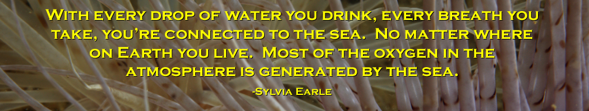

Dive Video
Dive Video
Emerald Diving
Explore the coastal and inland waters of
Washington and BC
Explore the coastal and inland waters of
Washington and BC


Diving with sixgill sharks in the cold waters off Three Tree Point (near Burien) in Puget Sound during the summers of 2004. We had up to 10 sharks show for our feeding dives, with the animals ranging from 6 to 11 feet in length - essentially making these sub-adults as mature sixgills grow to 18'. Although these are typically deep water sharks, I suspect a dead whale carcass in the area attracted a number of animals to the area that would come up to the shallows (80 feet) at night. Since 2004, sixgill sighting by divers in Puget Sound have fallen off markedly.
Diving the incredible Socorro Islands (+240 miles off the coast of Mexico in the Pacific Ocean) during February of 2007 aboard the fantastic Nautilus Explorer - the best run livaboard I have ever been on. Although not a haven of colorful corals, chevron and black manta rays dominated the trip along with various species of sharks including silvertips, whitetips, Galopagos, scalloped hammerheads, and silkies. Amazing pelagic diving from an amazing dive vessel.
Diving with God's Pocket Resort on Hurst Island in the cold waters in and around Browning Pass. This is arguably some of the best cold water diving on the planet, although I think the Neah Bay area has an adge. However, you can't beat the hospitality of the God's Pocket proprietors, Bill and Annie Weeks. Giant Pacific octopus, wolf eels, countless brilliantly colored invertebrates, playful stellar sealions, and schools or rockfish make this an outstanding diving destination.
Simply some of the best diving I have done - anywhere. Tiger Beach offer pristine reefs in a protected marine sanctuary along with wonderful up close and personal encounters with lemon, Atlantic nurse and Carribean reef sharks - and even the occasional tiger shark. Although the Carib Dancer boat was problematic and disappointing, the diving was wonderful. Note the Aggressor Fleet boats do not feed sharks, however they attract sharks to the dive site with a novel "scent traingle" filled with chum. The sharks cannot get to the bait inside the triangle.
I was so intrigued with the shark diving at Tiger Beach in 2015, I booked another charter in early 2016 that specializes in shark diving. No reef diving on this trip - the Dolphin Dreams exclusviely runs shark-feeding dives. Poor weather resulted in the loss of half the scheduled dives, but several of the dives we did get at Tiger Beach, produced up to 3 tiger sharks (9-11' in length) as well as countless Caribbean reef and lemon sharks. The main attraction at Bimini was 5 great hammerheads (up to 10' in length), the occasional Atlantic nurse shark, and several bull sharks lurking on the perimeter. If you can time the weather and get all the scheduled dives in, this would be a fabulous trip for shark enthusiasts.
